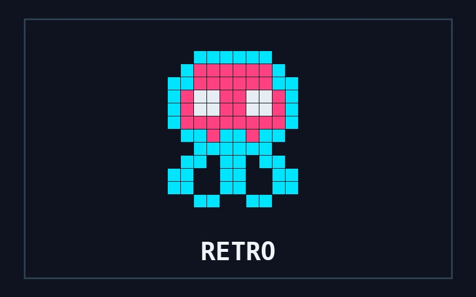

Retro: historia para animación
Propuesta de un corto sobre un personaje de videojuego antiguo que sale de su mundo y descubre juegos mucho más modernos. La idea es contar su aventura con un poco de humor.
Herramientas: Storyboard digital, dibujo y Photoshop